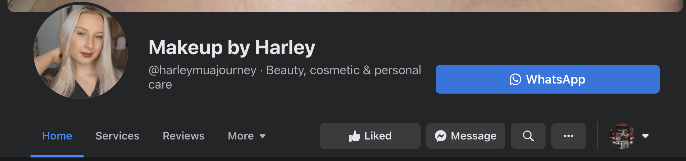

Artist's Bio
I started really doing makeup at around 15 years old when I was in the 8th grade. I watched tons of YouTube videos that showed me the correct way to do things and properly use color theory which I consider the fundamental base of makeup. My friends and family noticed that it was something that I enjoyed doing not just because of the sterotype of "women wear makeup" but because I enjoyed the process of it and the creativite outlet it allowed me to have. They suggested that I start doing it as a side job. After much consideration I went to the closest salon to my house which I had actually never been in before and did a moc makeup appointment as an interview. Luckily she approved and I have been doing makeup there ever since.
I am so thankful that she took a chance on me at such a young age because truly helped me flurish and get my name out there as a makeup artist.
I later started my makeup page on Facebook and instagram which I still operate on 4 years later. I began doing makeup for my classmates for Photoshoots, Prom, etc which forced me to talk to people I would have otherwise never spoken to. This truly helped me and allowed me to be more confident.

While I currently do not have my Estheticians license I am planning on obtaining it soon and broadening my scope of knowledge into facials, lash extensions, etc so that I will have a service to offer to everyone.
I am excited to take all of you on this journey with me!